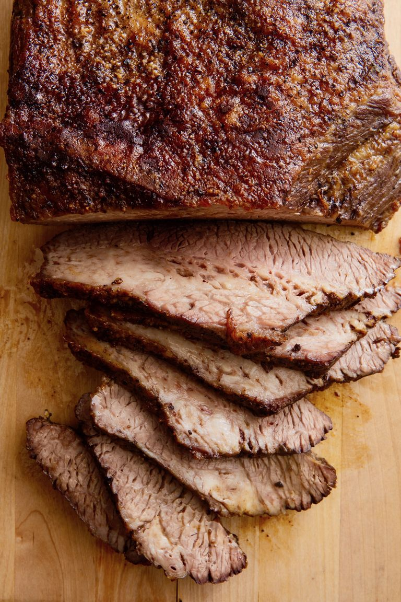

The only “ingredients” in this brisket are salt and pepper, so you want to make sure they do their job. Go for kosher salt and freshly ground black pepper (no shakers here!) to maximize flavor. Take your brisket out of the fridge, season generously on all sides, and leave it out until it gets to room temperature to begin the tenderizing process. Think dry brine, but easier.
Our foolproof ratio is 18 minutes per pound. Stick to that and you'll be golden. Ovens can vary, though, so to really be sure your brisket is cooked through and tender, check with a fork towards the end. Poke it into the middle—the fork should go through the meat easily, with no resistance.